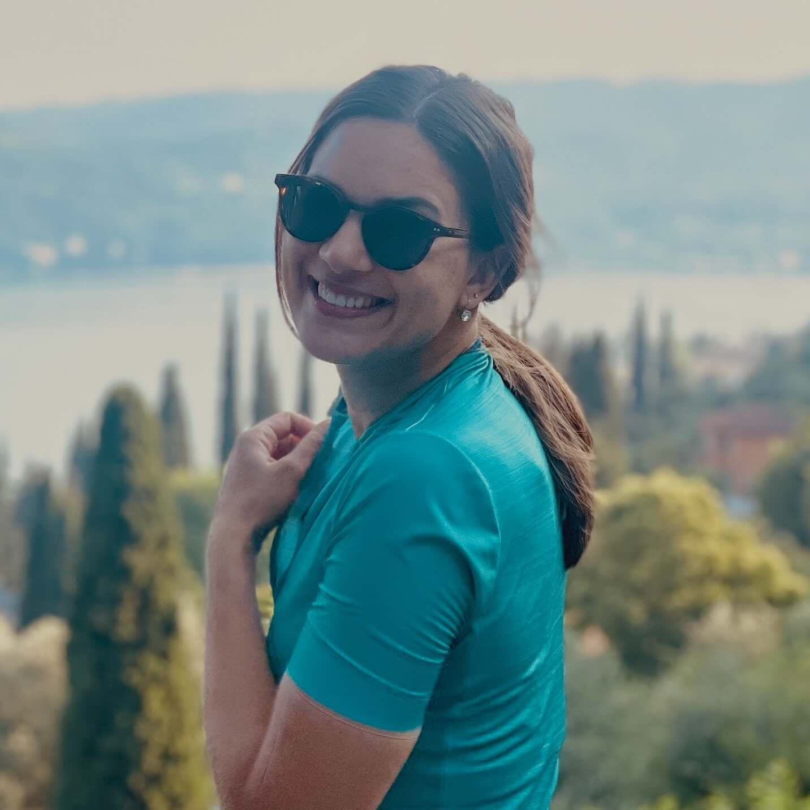
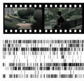
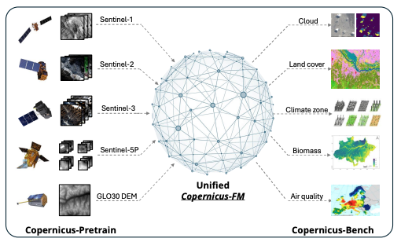
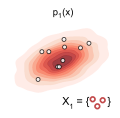

|
Franziska Gerken
I am a PhD candidate working with Laura Leal-Taixé at the Dynamic and Vision Learning Group, TU Munich.
In 2024, she completed a research internship at NVIDIA and has since continued her work there as a part-time student researcher.
Before starting my PhD, I obtained a Master's in Mathematics from University of Münster and a Bachelor's in Mathematics from Utrecht University. During my Master's, I focused on function field theory, Algebra and Stochastics, and did a minor in Computer Science.
For my Master thesis I visited the Mathematical Institute at University of Maryland, College Park.
I am fascinated by languages and how they serve as a window into other cultures. In my free time, I like to cycle, run and, cook. I also love latin dancing, especially bachata.
Email /
CV /
Twitter /
Github
|

|
Research
I am interested in Deep Learning and Computer Vision. My research focuses on representation learning for complex temporal and spatial data with applications in neuroscience and climate science.
Hereby, I am especially interested in leveraging advanced deep learning architectures from vision and language domains to overcome the challenges posed by real-world data, such as its inherent noise and complex, irregular structure.
|
|

|
Decoding movie content from neuronal population activity in the human medial temporal lobe
Franziska Gerken*, Alana Darcher*, Pedro J Gonçalves, Rachel Rapp, Ismail Elezi, Johannes Niediek, Marcel S Kehl, Thomas P Reber, Stefanie Liebe, Jakob H Macke, Florian Mormann, Laura Leal-Taixé
eLife
We present a novel approach for decoding dynamic and naturalistic stimuli from single-neuron activity in the human medial temporal lobe.
Our method leverages advanced deep learning techniques to extract meaningful representations from interconnected populations of neurons, enabling us to reliably predict the occurrence of semantic features of the movie being watched.
paper
|

|
Towards a Unified Copernicus Foundation Model for Earth Vision
Yi Wang, Zhitong Xiong, Chenying Liu, Adam J. Stewart, Thomas Dujardin, Nikolaos Ioannis Bountos, Angelos Zavras, Franziska Gerken, Ioannis Papoutsis, Laura Leal-Taixé, Xiao Xiang Zhu
ICCV 2025
XXX.
paper |
code
|

|
A Practical Guide to Sample-based Statistical Distances for Evaluating Generative Models in Science
Sebastian Bischoff, Alana Darcher, Michael Deistler, Richard Gao, Franziska Gerken, Manuel Gloeckler, Lisa Haxel, Jaivardhan Kapoor, Janne K Lappalainen, Jakob H. Macke, Guy Moss, Matthijs Pals, Felix C Pei, Rachel Rapp, A Erdem Sağtekin, Cornelius Schröder, Auguste Schulz, Zinovia Stefanidi, Shoji Toyota, Linda Ulmer, Julius Vetter
TMLR
XXX.
paper |
code
|
|
{kind=link}